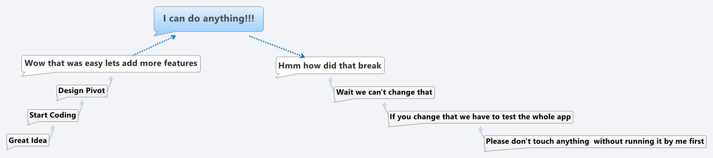
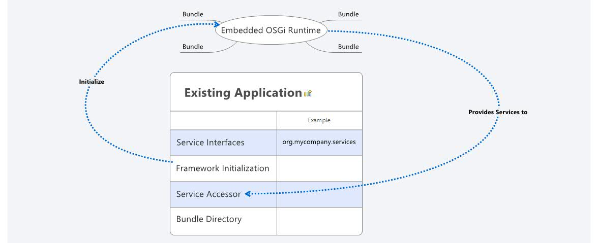

Adding Modularity Afterwards with Embedded OSGi
Bob Paulin / @bobpaulin / bob@bobpaulin.com
About Me
- Independent Consultant
- Business Enablement
- Web Centric Platforms
- Continuous Delivery
Regret

Application Development from the eyes of a developer
Hope?

If we could start over what would we want?
Modularity
Options?
OSGi
- Mature 10+ Years
- Supported by Tools
- Modularity is enforced by Contracts
- Versioning
Inversion of Control (IoC)
- Lightweight
- Easily added to existing systems
Jigsaw
- Java 9?
- Versioning
- Interoperability with OSGi
OSGi: When does embedding make sense?
Lots of Tightly Coupled Code
Want an Isolated Third-Party Container
Licensing/Proprietary Code
No Budget/Time/Desire for full OSGi
Embedded Design/Implementation
Minimum required bundles
- Felix Framework
A few more to consider...
- Felix Config Admin
- Gogo Shell
- Web Console + HTTP
- SCR Annotations
- Apache ACE Management Agent
Exposing packages to the framework via System Packages
configMap.put(Constants.FRAMEWORK_SYSTEMPACKAGES_EXTRA,
"edu.umich.soar,edu.umich.soar.gridmap2d.config," +
"edu.umich.soar.modules.services," +
"edu.umich.soar.gridmap2d,edu.umich.soar.gridmap2d.world," +
"edu.umich.soar.gridmap2d.visuals," +
"org.eclipse.swt.widgets,org.eclipse.swt.graphics; version=0.0.1");
Setting up the Framework
//Yup it's that easy!
m_felix = new Felix(configMap);
m_felix.start();
Supplying Services to the Non-OSGi code
public <S> S getService(Class<S> serviceClass)
{
ServiceReference<S> ref = m_activator.getContext()
.getServiceReference(serviceClass);
return m_activator.getContext().getService(ref);
}